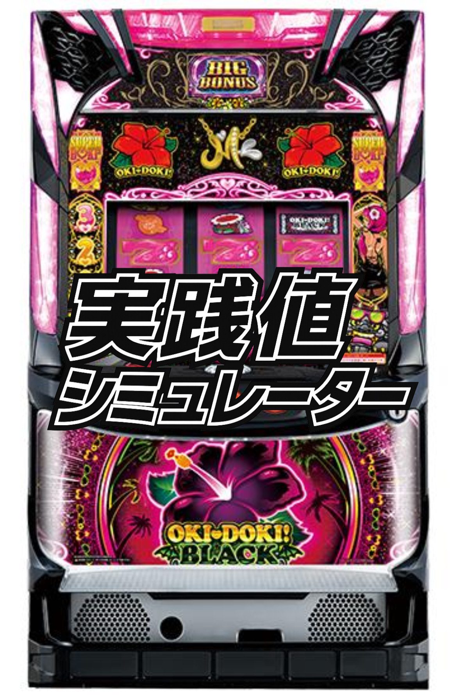
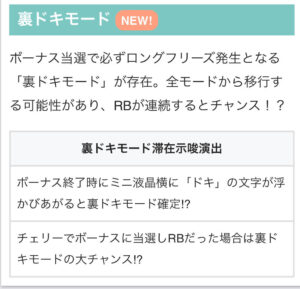

← 機種一覧 S沖ドキBLACK実践値シミュレーター ☆ お気に入り  狙い目 📸 履歴画像から自動入力 履歴画像を選択 表をクリアして追加 表の下に追加 見比べる --- 有利区間計算ツール モードBLACK 台Aの台Bの台 上に行追加 上下を入替 クリア 回G数種別有利区間G数 下に行追加 選択削除 結果 BB/RB枚数調整 BLACK期待値を算出 沖ドキBLACK 区間シミュレーター 換金率設定 1000円 枚貸出 / 枚交換 等価 46/52 50/55 持ちメダル 枚 (仮定)有利区間天井G数 🔄 👆 更新には 🔄 ボタン を押してください 起点開始を 設定変更後【切断後代用】に 天国2連後に 天国3連後に 天国4連後に 天国5連後に 天国6連後に 天国7連後に 天国8連後に 天国9連後に 天国10連以上後に 天国α後に 天国β後に 天国α-β後に その日の一番最初から 「一番最初から」選択時フィルター 初当たりフィルター 200G以内 201G以上 跨ぎ天国後駆け抜けデータ (累計2000G以内で天国1回のみ) 4連 5連 6連 7連 現在有利区間G数 現在ボーナス間G数 ※編集不要判定用区間G数 跨ぎ狙い時の天国履歴設定 天国履歴なし − ＋ 複数天国連荘で絞り込む ２つ目の天国連荘設定 天国履歴なし − ＋ チャンスモード完全除外 (201G以上) 201G未満のみ 引戻モードフィルター (天国履歴設定で指定した天国後の初当たり) 指定なし 200以内指定 201G以上 33G 〜 200G 起点開始から〇回目天国スタート オフ オン 1回目 2回目以降 計算 2連時の天国内 当選G数フィルター: 1G 〜 32G ALL BB[2-15,32] BB[16-31,1] RB[1-15,32] RB[16-31] データ取得中… ◇跨ぎ狙い時の天国一撃枚数別 平均差枚グラフ グラフフィルター 打ち出し前G数フィルター (±200G) ◇天国履歴詳細指定 天国履歴回数指定 オフ オン 詳細天国モードフィルター 指定なし 天国α 天国β 天国α-β 切断濃厚 天国履歴開始有利区間G数フィルター 指定なし 指定あり 機械割でフィルター 指定なし 指定あり 天国一撃枚数 連荘決定時枚数 天国一撃枚数別 平均差枚 (連が対象) 全選択 連荘決定時獲得枚数 (連が対象) 全選択 3連時の天国内 当選G数フィルター: 1G 〜 32G サンプル数: 1-50例 51-100例 101-150例 151例~ ※サンプル数が100件以下のデータはブレが大きいため、参考値としてご覧ください。 グラフを表示するには、上の「跨ぎ狙い時の天国履歴設定」で2連以上を選択してください。 ◇2連各履歴時平均差枚 ゲーム数範囲: 種別 BB RB サンプル表示 抽出データ ？ 操作ヒント 📖 画像切り取りの操作ヒント × 💡 ヒントを閉じると画像の切り取りができます ⚡ AI認識精度を上げるコツ ヘッダー部分を必ず含める タイトル、ラベル、項目名等を含めることでAIの認識精度が大幅に向上します データ全体が画面内に収まるように切り取る データの周囲に少し余白を残す 📸 切り取り例 ✅ 良い例を見る ❌ 悪い例を見る キャンセル 切り取り ツールの使用方法 詳しい使用方法は以下の動画で解説しています 有利区間の主な特徴 項目内容ランダム切断1600G～2300Gの範囲でランダムにリセット,2200Gまでが狙い目切断の傾向天国なし: 2100G～2200G天国2連混在: 天国ぽくない履歴で2200G狙い可能切断時の恩恵モードB滞在中の切断で天国モード移行0スルーからでも高期待値安定性重視なら1スルー以上推奨 有利区間の起点（信頼性が高いポイント） 起点パターン判定基準1. 設定変更後（リセット）確実な起点2. 特定の天国3連終了後RB始まりの3連（BB-RB-BB、RB-RB-RB等）※1GBB連は除外3. 一撃1200枚以上獲得後連チャン終了時点 3連履歴の判定基準 履歴パターン判定BB-BB-BB切断してない履歴多い（起点×、跨ぎ狙い×）BB-BB-RB切断と引継ぎ混在（起点×、跨ぎ狙い×）BB-RB-BBBB-RB-RBRB-RB-RBRB-RB-BBRB-BB-RBRB-BB-BBほぼ切断確定（起点○）※レア役1GBB除く 天国一撃枚数による切断判定 獲得枚数切断の可能性600枚未満高い（結果が著しく悪い）600～699枚低い（結果が良好）700枚以上サンプル少（要注意） 状況別の狙い目ゲーム数 状況狙い目立ち回りパターンA起点から天国なし2100G～2200G1200Gあたりから打ち始め天井（2200G）を目指すパターンB天国跨ぎ推測2000G元の起点からカウント継続2000G付近から切断の可能性 天国履歴別の判断 天国履歴判断条件・注意点3連切断の可能性高新たな起点となる場合が多い跨ぎ狙い不可2連条件付き跨ぎ狙い可1500G以降 + 1スルー以上履歴とツールで要確認4～7連（1200枚未満）跨ぎの可能性あり1600～2000Gで天国突入は要注意 狙い目一覧 【ステップ1】有利区間の起点を特定する 有利区間ゲーム数を正確にカウントするため、まず「どこからカウントを始めるか（起点）」を決めます。誤認を避けるため、以下の信頼性が高いポイントを起点とします。 起点パターン判定基準1. 設定変更後（リセット）確実な起点2. 特定の天国3連終了後RB始まりの3連（BB-RB-BB、RB-RB-RB等）※1GBB連は除外3. 一撃1200枚以上獲得後連チャン終了時点 3連履歴の判定基準 履歴パターン判定BB-BB-BB切断してない履歴多い（起点×、跨ぎ狙い×）BB-BB-RB切断と引継ぎ混在（起点×、跨ぎ狙い×）BB-RB-BBBB-RB-RBRB-RB-RBRB-RB-BBRB-BB-RBRB-BB-BBほぼ切断確定（起点○）※レア役1GBB除く 注意点: 上記以外の曖昧な履歴（例: 獲得枚数の少ない4連など）は、有利区間が継続している（跨いでいる）可能性があるため、安易に起点としないようにします。 【ステップ2】起点からの状況に応じて狙い目を定める 起点を特定したら、そこからの履歴に応じて狙うべきゲーム数を定めます。 パターンA：起点から一度も天国に入っていない場合 状況:19 設定変更後や3連終了後から、一度も天国モードに突入していない。または天国2連に見える履歴も可能。天国ぽくない2連は例えば19~31GのBBとRB、1GBB履歴。 狙い目: 最終目標は有利区間2100G～2200G 立ち回り: 予想起点から有利区間2200Gを目指して遊技します。 パターンB：起点から天国に突入したが、有利区間を跨いだと推測される場合 状況: 起点から一度天国に突入したが、その連チャンが有利区間を切断させる条件（3連、1200枚以上など）を満たさなかった。 狙い目: 有利区間2000G 立ち回り: 当該天国履歴が「有利区間継続（跨ぎ）」と判断し、予想起点からゲーム数をカウントし続けます。有利区間2000Gを跨ぎボーナス引けるまで遊戯 【ステップ3】「跨ぎ天国履歴」の判断 パターンBに該当する場合、その天国履歴が「切断」なのか「跨ぎ」なのかを正しく判断することが最も重要です。 天国3連の履歴 判断: 有利区間切断の履歴が非常に多い。 結論: 3連終了時点は履歴次第で新たな起点となる場合が多く。跨ぎ狙いはできません。 天国2連の履歴 判断: 切断されている可能性が高いが、条件付きで跨ぎ狙いの価値あり。 狙える条件: 例えば有利区間ゲーム数が1500G以降、天国履歴が19-31G、かつ1スルー以上している場合。 ※詳細な押し引きは、履歴（BB/RB、当選ゲーム数）や差枚数をツールで確認し、判断に迷う場合はDiscordなどで相談するのが推奨されます。 天国4連から7連付近でツールで切断と判定されない（獲得1200枚未満）履歴 判断: 跨ぎの可能性あり。 跨ぎやすい条件: 跨ぎの天国突入時の有利区間ゲーム数が1600G以内。 非推奨（危険なパターン）: 有利区間1600G～2000Gの範囲でこの天国に突入した場合、たとえ跨いだとしても0スルーで終わってしまう（次の天国に繋がらない）危険な傾向（※サンプル不足の仮説） このパターンの台は、次の展開が厳しくなる可能性があるため、避けるのが無難 【ステップ4】 4～7連の天国が複数回あり、起点が不明な台 履歴が複雑で有利区間の起点がどこか分からない台は、無理に跨ぎを狙うのではなく、従来の天国を起点と仮定して立ち回りが有効です。 狙い目 天国間3スルー、かつ有利区間1500G以上で続行可能。 天国間2スルー以上、かつ有利区間1800G以上で続行可能。 リセット狙い ゲーム数推奨度0G～32G推奨～70G積極派のみ360G～402G推奨（ペナ打ち考慮） 朝イチ当選G数別ボーナス間天井狙い スルー数当選G数狙い目1スルー32G以内600G～32～150G600G～151G以上780G～2スルー32G以内450G～32～150G450G～151G以上580G～3スルー以降–スルー別天井狙いと同様※151G以上当選後は+100G 起点が明確なスルー別ボーナス間天井狙い スルー数起点種類狙い目0スルーリセ後800G～天国後（3連以上）750G～天国後（2連）積極派500G～ / 慎重派550G～1スルー–550G～2スルー–480G～3スルー–380G～4スルー以降–300G～ 天国履歴から起点が明確または天国履歴が多く起点が不明な有利区間天井狙い ボーナス間G数狙い目33G想定1500G～300G想定1800G～ [貫通狙い]天国履歴が複数回あり起点が非常に不明確な有利区間天井狙い ボーナス間G数狙い目3スルー以上1400G～2スルー以上1200G～ ※朝イチ150G以内当選後は100～200Gボーダーダウン可能 ※ボーナスG数: BIG 59G / REG 24G やめ時 状況やめ時基本33G（基本は32Gやめ。念のためなら33Gやめ）有利区間天井狙い天国履歴なし台有利区間2200G跨ぎ後のボーナス当選まで有利区間天井狙い天国履歴あり台有利区間2000G跨ぎ後 ※有利区間天井は未確定要素あり 切断濃厚と有利区間起点の決め方と跨ぎ履歴 沖ドキBLACKの狙い目は「有利区間が切断されるタイミングでボーナスを当選させ、切断(裏ドキ)天国モードに突入させる」ことです。BLACKはGOLDに比べて仕様が複雑な部分があるため、正確な起点の特定と状況判断が重要になります。これらの推測はツールを元に行っているもので数値の変化により狙いを調整することがあります。 有利区間の主な特徴（BLACK） ランダム切断: 有利区間は1600G～2300Gの範囲でランダムにリセット（切断）され2000から2200までピークダウン。 切断の傾向: 有利区間内で一度も天国に突入していない場合、2100G～2200Gという深いゲーム数で切断されやすい。有利区間内で天国2連が混ざる場合天国ぽくない履歴によっては2300G狙いが可能。４連以上1200枚未満の天国が混ざる場合は2050G付近で切断の可能性が高い。 切断時の恩恵: モードB滞在中に有利区間が切断されると、天国モードへ移行する。 切断タイミングでの当選は平均獲得枚数（TY）が高く、たとえ0スルー状態（天国後即ヤメの台）からでも高い期待値を秘めている。 ただし、リスクを抑え安定性を求めるなら、1スルー以上の台を優先するのが賢明。 【総括】実践的な立ち回り手順 起点の特定: まず、データ表示器から「設定変更後」「1G連なしの3連終了後」「1200枚以上獲得後」のいずれかを探し、有利区間の起点とする。 状況判断と目標設定: 【天国なし】→ 起点からゲーム数をカウントし、1200Gあたりから打ち始める。 【天国あり】→ その天国履歴を上記【ステップ3】に基づき評価する。 「切断」と判断（例: 3連） → そこを新しい起点として再スタート。 「跨ぎ」と判断（例: 条件を満たす2連や4連以上） → 元の起点からカウントを継続し、2000Gを目指して打ち始める。 ツールとDiscordの活用: 有利区間ゲーム数のカウントにはツールを使用する。 2連履歴や特殊なパターンのように判断が難しい場合は、Discordや信頼できる情報源（なるちゃんのnoteなど）で類似ケースを参考にしたり、質問したりして判断精度を高める その他  参考元 ちょんぼりすた すろぱちくえすと